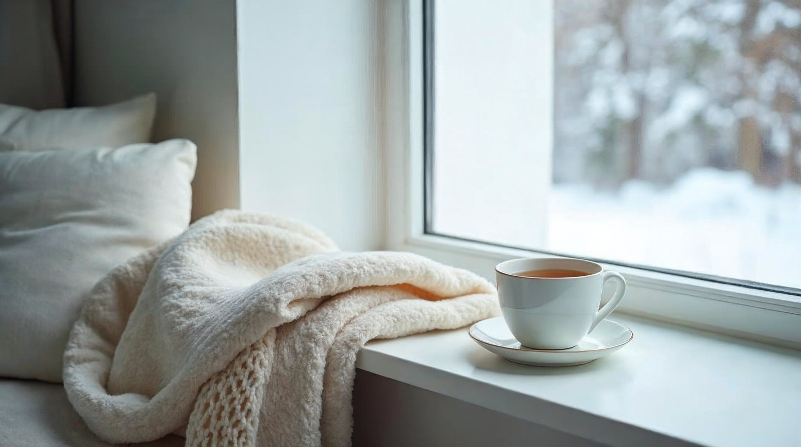
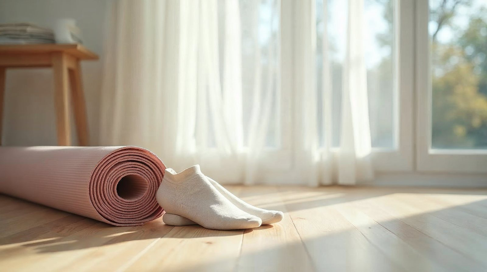
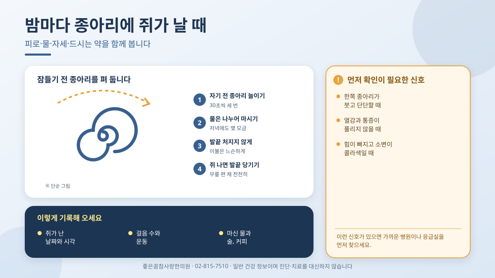

이종호 한의사 감수좋은꿈참사랑한의원 대표원장 (한의사 면허번호 19769)발행 2026-11-26 · 수정 2026-11-26
이 글의 차례
새벽 세 시, 잠결에 기지개를 켜는 순간 종아리가 돌처럼 딱딱하게 뭉칩니다. 발가락이 저절로 오그라들고, 숨이 막힐 만큼 아파 벌떡 일어나 앉습니다. 겨우 풀고 나서도 종아리가 얼얼해 다시 잠들기 어렵고, 다음 날까지 그 자리가 멍든 것처럼 뻐근합니다.
밤에 종아리에 쥐가 나는 일은 생각보다 흔합니다. 한두 번 겪고 지나가는 분도 있지만, 일주일에 몇 번씩 반복되어 잠자리에 드는 것 자체가 두려워졌다는 분도 진료실에서 자주 뵙습니다.
쥐는 근육이 내 뜻과 상관없이 갑자기 강하게 수축해 풀리지 않는 상태입니다. 대부분은 근육의 피로, 몸속 물과 전해질의 흐름, 자는 자세 같은 일상의 이유와 관련이 있지만, 드시는 약이나 몸의 다른 사정이 함께 얽혀 있는 경우도 있습니다.
오늘은 밤에 쥐가 나는 이유를 하나씩 나누어 보고, 쥐가 났을 때 푸는 법과 잠들기 전 습관, 한의원에서 함께 살필 수 있는 부분을 차근차근 말씀드리겠습니다.
쥐가 날 때 근육에서는 무슨 일이 일어나나요
근육은 신경에서 '줄어들어라'는 신호를 받으면 수축하고, 신호가 멈추면 다시 풀립니다. 쥐는 이 신호가 제멋대로 이어지거나, 근육이 신호에 지나치게 예민해져 수축이 멈추지 않는 상태라고 보시면 됩니다.
종아리는 쥐가 가장 잘 나는 자리입니다. 하루 종일 몸을 지탱하며 일하는 근육이고, 잠잘 때 발끝이 아래로 향하면 이미 짧아진 상태로 오래 머물기 때문입니다. 짧아진 근육은 작은 자극에도 더 쉽게 뭉칩니다.
발바닥이나 허벅지 뒤쪽에 쥐가 나는 분도 계십니다. 자리는 달라도 피로하고 짧게 굳은 근육에 생기기 쉽다는 점은 비슷합니다.
왜 하필 밤에 쥐가 날까요
낮 동안 많이 걷거나 오래 서 있었던 날에는 종아리 근육이 지쳐 있습니다. 지친 근육은 신호에 예민해져, 밤에 자세를 바꾸거나 기지개를 켜는 작은 움직임에도 쉽게 뭉칩니다. 평소보다 등산이나 운동을 많이 한 날 밤에 쥐가 났다는 이야기를 자주 듣습니다.
잠자는 자세도 큰 몫을 합니다. 엎드려 자거나 이불이 발등을 눌러 발끝이 아래로 오래 향하면, 종아리가 밤새 짧아진 채로 있게 됩니다. 이 상태에서 다리를 쭉 뻗으면 근육이 한꺼번에 수축하며 쥐가 나기 쉽습니다.
몸속 물이 부족한 것도 이유가 됩니다. 땀을 많이 흘린 날, 물을 적게 마신 날, 술을 마신 날에는 근육이 더 예민해질 수 있습니다. 밤 소변이 걱정되어 저녁 물을 아예 끊는 분도 계신데, 이것이 쥐와 관련된 경우도 있습니다.
오래 앉아 지내 종아리를 거의 쓰지 않는 생활도 쥐와 가깝습니다. 근육이 짧게 굳고 다리의 혈액 흐름이 느려지면서, 저녁이면 다리가 붓고 밤에는 쥐가 나는 흐름이 이어지기도 합니다.
쥐와 함께 살펴볼 몸의 사정
드시는 약 가운데 일부는 쥐와 관련될 수 있습니다. 소변을 늘리는 혈압약, 콜레스테롤 약 일부, 천식 약 일부 등이 그 예로 이야기됩니다. 그렇다고 혼자 약을 끊으시면 안 되고, 쥐가 잦아졌다는 사실을 처방한 선생님께 알려 상의하시면 됩니다.
임신 중, 특히 중반 이후에는 다리에 쥐가 자주 납니다. 배가 커지며 다리 혈액 흐름이 달라지고 몸무게가 늘어 종아리가 더 지치기 때문입니다. 임신 중이시라면 진료 전에 먼저 알려 주시고, 산부인과와도 함께 상의해 주세요.
혈당 관리가 필요하거나 신장, 갑상선 기능에 문제가 있는 경우, 허리에서 다리로 가는 신경이 눌린 경우에도 쥐가 잦아질 수 있습니다. 그래서 쥐만 보지 않고 다리 저림, 붓기, 피로감, 소변 변화처럼 함께 오는 신호를 꼼꼼히 여쭙습니다.
비슷해 보이는 다른 다리 불편
하지불안 증후군은 저녁이나 밤에 다리 속이 근질거리고 움직이고 싶은 충동이 드는 것이 중심입니다. 근육이 딱딱하게 뭉치는 쥐와는 느낌이 다르고, 움직이면 잠시 편해지는 것이 특징입니다.
걸을 때 종아리가 조여 오다가 쉬면 풀리는 경우는 다리 혈관이나 허리 신경 문제를 함께 생각합니다. 쥐는 대개 쉬거나 자는 동안 갑자기 오고, 걷는 거리와는 관계가 적은 편입니다.
한쪽 종아리가 붓고 단단하며 계속 아픈 것은 쥐와 다르게 살펴야 합니다. 쥐는 몇십 초에서 몇 분 안에 풀리고 잠시 얼얼함만 남는 경우가 대부분입니다. 풀리지 않는 통증과 붓기가 함께라면 진료실에서 꼭 말씀해 주세요.
쥐가 났을 때는 이렇게 풀어 보세요
종아리에 쥐가 나면 무릎을 편 채 발끝을 몸 쪽으로 천천히 당겨 주세요. 손이 발에 닿지 않으면 수건을 발바닥에 걸어 당겨도 됩니다. 근육을 반대 방향으로 늘이면 수축이 서서히 풀립니다.
일어설 수 있다면 쥐가 난 다리를 뒤로 빼고 벽을 짚은 채 뒤꿈치를 바닥에 붙여 종아리를 늘이는 것도 방법입니다. 몇 걸음 천천히 걸어 보면 근육이 다시 움직이며 풀리기도 합니다.
풀린 뒤에는 따뜻한 수건이나 찜질로 종아리를 데워 주고, 손바닥으로 발목에서 무릎 쪽으로 부드럽게 쓸어 올려 주세요. 너무 세게 주무르면 다음 날 멍든 것처럼 아플 수 있으니 살살 하시는 편이 좋습니다.
나이가 들면 왜 쥐가 잦아질까요
나이가 들면 근육의 양이 조금씩 줄고, 힘줄과 근육이 짧고 뻣뻣해지기 쉽습니다. 같은 일을 해도 근육이 더 빨리 지치고, 지친 근육은 밤에 쉽게 뭉칩니다. 그래서 어르신께 밤 쥐가 더 흔하게 나타납니다.
목마름을 덜 느끼게 되는 것도 이유입니다. 물을 충분히 드시지 않는데도 갈증이 크지 않아 하루 종일 물을 적게 드시는 분이 많습니다. 여기에 밤 소변 때문에 저녁 물을 줄이시면 몸속 물이 더 부족해지기 쉽습니다.
드시는 약의 가짓수가 늘어나는 것도 함께 살펴볼 부분입니다. 여러 약을 함께 드시는 어르신이라면 약 봉투를 모두 가져와 주세요. 쥐와 관련될 수 있는 부분이 보이면 처방한 선생님과 상의하시도록 안내드립니다.

계절에 따라 쥐가 달라지기도 합니다
여름에는 땀으로 물과 전해질이 빠져나가 쥐가 잦아지는 분이 많습니다. 더운 날 운동하거나 일한 뒤에는 물을 평소보다 조금 더 나누어 드시고, 땀을 많이 흘린 날은 식사도 거르지 않도록 챙겨 주세요.
겨울에는 추위에 근육이 움츠러들고 다리가 차가워져 쥐가 잦아지기도 합니다. 찬 방에서 이불 밖으로 다리가 나와 있거나, 차가운 바닥에서 오래 지낸 날 밤에 쥐가 났다는 이야기를 자주 듣습니다. 잘 때 얇은 수면 양말을 신는 것도 방법입니다.

낮 동안 종아리를 돌보는 법
밤의 쥐는 낮의 종아리 상태와 이어져 있습니다. 오래 앉아 일하신다면 한 시간에 한 번 일어나 발뒤꿈치를 들었다 내리기를 열 번쯤 해 주세요. 종아리 근육이 움직이면서 다리의 피 흐름도 함께 돕습니다.
반대로 오래 서서 일하신다면 틈틈이 앉아 다리를 쉬게 하고, 낮은 받침에 발을 올려 종아리를 잠시 늘여 주세요. 굽 높은 신발은 종아리를 짧게 만들어 쥐와 가까우니, 오래 걷는 날에는 편한 신발을 고르시길 권합니다.
쥐가 난 다음 날은 어떻게 지내면 좋을까요
강한 쥐가 지나간 다음 날에는 종아리가 멍든 것처럼 뻐근하고, 걸을 때 당기는 느낌이 남는 경우가 많습니다. 근육이 크게 수축했다 풀리면서 작은 자극이 남은 것이니, 이날은 무리한 운동이나 오래 걷기를 잠시 줄여 주세요.
따뜻한 샤워나 찜질로 종아리를 데우고, 아프지 않은 범위에서 부드럽게 늘여 주면 뻐근함이 한결 덜해집니다. 세게 주무르거나 두드리는 것보다 가볍게 쓸어 올리는 정도가 편한 분이 많습니다.
뻐근함이 사나흘 넘게 이어지거나 오히려 점점 붓고 단단해진다면, 쥐 뒤에 남은 근육 피로와는 다르게 살펴야 할 수 있습니다. 이런 변화는 진료실에서 꼭 말씀해 주세요.
먼저 이렇게 여쭙니다
처음 오시면 저는 대략 이런 순서로 여쭙니다. 미리 떠올려 오시면 진료가 훨씬 수월해집니다.
- 일주일에 몇 번, 주로 몇 시쯤 쥐가 나나요?
- 한쪽 다리에만 나나요, 양쪽 모두 나나요?
- 쥐가 난 날 낮에 많이 걷거나 운동했나요?
- 하루에 물은 어느 정도 드시나요? 저녁에 물을 줄이시나요?
- 드시는 약과 영양제는 무엇인가요?
- 다리 저림, 붓기, 걸을 때 종아리 조임이 함께 있나요?
쥐가 난 날을 달력에 표시만 해 오셔도 좋습니다. 날짜를 모아 보면 특정 활동이나 생활과 겹치는 흐름이 보이는 경우가 많습니다.
일상에서 먼저 해 볼 수 있는 것
밤에 쥐가 나는 분께 가장 먼저 권하는 것은 잠들기 전 종아리 늘이기입니다. 근육을 길게 펴 둔 채 잠자리에 들면 밤새 짧게 굳는 것을 줄일 수 있습니다.
- 잠들기 전 벽을 짚고 종아리를 30초씩 세 번 늘이기
- 낮 동안 물을 나누어 마시고, 저녁에도 몇 모금은 마시기
- 엎드려 자기보다 바로 눕거나 옆으로 눕기
- 이불이 발등을 누르지 않도록 발 쪽을 느슨하게 두기
- 오래 앉아 있을 때 한 시간에 한 번 발뒤꿈치 들었다 내리기
- 다리가 차다면 잠들기 전 미지근한 물로 발과 종아리 데우기
바로 누워 잘 때 발 아래에 얇은 쿠션을 받쳐 발끝이 너무 아래로 처지지 않게 해 주는 것도 도움이 될 수 있습니다. 옆으로 누울 때는 무릎을 살짝 굽힌 편한 자세가 좋습니다.
물은 한꺼번에 많이 마시기보다 낮 동안 조금씩 나누어 드시는 편이 좋습니다. 밤 소변이 걱정되신다면 잠들기 두 시간 전까지는 평소처럼 드시고, 그 뒤로는 몇 모금 정도로 조절해 보세요.
술과 카페인이 많은 날 쥐가 잦다고 느끼신다면, 그 양을 먼저 줄여 보시는 것도 방법입니다. 영양제를 따로 드시려 한다면 드시는 약과 함께 처방한 선생님이나 약사와 먼저 상의해 주세요.
한의원에서 함께 살필 수 있는 경우
- 밤에 종아리 쥐가 잦아 잠을 자주 설치는 경우
- 오래 서 있거나 걷는 일을 하며 종아리가 늘 뭉쳐 있는 경우
- 다리가 차고 저녁이면 붓는 느낌이 쥐와 함께 있는 경우
- 쥐가 난 뒤 종아리가 며칠씩 뻐근해 걷기가 불편한 경우
- 허리나 골반이 함께 불편하고 다리 근육이 쉽게 지치는 경우
좋은꿈참사랑한의원에서는 먼저 아래 '먼저 확인이 필요한' 신호가 없는지 확인합니다. 그다음 종아리와 허벅지 근육의 긴장, 발의 온도와 붓기, 허리와 골반의 상태를 함께 봅니다.
진찰한 내용을 바탕으로 종아리와 다리 근육의 긴장을 줄이는 침, 온열 관리, 허리와 골반의 균형을 살피는 추나 가운데 지금 상태에 맞는 것을 고릅니다. 잠과 기운이 함께 떨어진 분께는 한약 상담을 드리기도 하는데, 이때는 드시는 약을 먼저 확인하고 신중히 정합니다.
처방받아 드시는 약은 임의로 멈추지 않도록 안내합니다. 약과 쥐의 관련이 의심되면 처방한 선생님과 상의하시도록 말씀드리고, 한의원 진료는 그와 나란히 갑니다.
이렇게 기록해 오시면 상담이 쉬워집니다
쥐는 언제 오는지 예측하기 어렵지만, 기록을 모으면 흐름이 보입니다. 2주 정도만 적어 보세요.
- 쥐가 난 날짜와 시각, 어느 쪽 다리였는지
- 그날 걸음 수나 운동, 서 있던 시간
- 그날 마신 물의 양과 술, 커피
- 잠들기 전 종아리 늘이기를 한 날 표시
- 새로 시작했거나 바꾼 약
기록을 나란히 보면 많이 걸은 날, 물을 적게 마신 날, 늘이기를 빼먹은 날과 쥐가 겹치는지가 드러납니다. 그 연결이 보이면 무엇부터 바꿀지 정하기가 쉬워집니다.
편안한 밤을 되찾기 위해
밤마다 쥐가 나면 잠자리에 드는 것 자체가 긴장되기 마련입니다. 하지만 대부분은 낮 동안의 피로와 물, 자는 자세 같은 작은 습관을 조절하면서 횟수가 줄어드는 경우가 많습니다.
쥐가 한 번 나고 나면 '또 그럴까' 하는 걱정에 잠이 얕아지기도 합니다. 그럴 때는 머리맡에 수건 한 장을 두고, 쥐가 나면 이렇게 풀면 된다는 순서를 미리 익혀 두세요. 대처법을 알고 있다는 것만으로도 잠자리의 긴장이 조금 풀리는 분이 많습니다.
이번 주에는 잠들기 전 종아리 늘이기와 낮 동안 물 나누어 마시기, 이 두 가지만 먼저 해 보세요. 다음에 오시면 2주 기록을 함께 보며 무엇이 밤의 쥐와 이어져 있는지 찾아보겠습니다.
이런 증상은 먼저 확인이 필요합니다
- 한쪽 종아리가 붓고 단단해지며 열감과 통증이 풀리지 않고 이어지는 경우
- 다리 경련과 함께 힘이 빠지거나 소변 색이 콜라처럼 진해지는 경우
이런 신호가 있으면 한의원보다 가까운 병원이나 응급실을 먼저 찾으세요.
함께 읽으면 좋은 글
- 등산 뒤 종아리가 뭉치고 아플 때 초음파로 무엇을 보나요?
- 겨울밤 자다가 종아리에 쥐가 나서 깨는 것은 어떻게 살피나요?
- 저녁만 되면 다리 속이 벌레 기어가듯 근질거려 가만히 있기 힘든 하지불안 증후군은 어떻게 살피나요?
- 저녁마다 다리가 붓고 양말 자국이 깊게 남을 때, 부종은 무엇을 나눠 살피나요?
- 걸으면 다리가 저려 자꾸 쉬어야 하는 척추관 협착증은 어떻게 살피나요?

여쭙는 것
- 일주일에 몇 번, 주로 몇 시쯤 쥐가 나나요?
- 한쪽 다리에만 나나요, 양쪽 모두 나나요?
- 쥐가 난 날 낮에 많이 걷거나 운동했나요?
생활에서 해 볼 것
- 잠들기 전 벽을 짚고 종아리를 30초씩 세 번 늘이기
- 낮 동안 물을 나누어 마시고, 저녁에도 몇 모금은 마시기
- 엎드려 자기보다 바로 눕거나 옆으로 눕기
한의원에서 함께 살필 것
- 밤에 종아리 쥐가 잦아 잠을 자주 설치는 경우
- 오래 서 있거나 걷는 일을 하며 종아리가 늘 뭉쳐 있는 경우
- 다리가 차고 저녁이면 붓는 느낌이 쥐와 함께 있는 경우
먼저 확인이 필요한 신호
- 한쪽 종아리가 붓고 단단해지며 열감과 통증이 풀리지 않고 이어지는 경우
- 다리 경련과 함께 힘이 빠지거나 소변 색이 콜라처럼 진해지는 경우
한눈에 보는 표
| 구분 | 핵심 |
|---|---|
| 여쭙는 것 | 일주일에 몇 번, 주로 몇 시쯤 쥐가 나나요? 한쪽 다리에만 나나요, 양쪽 모두 나나요? |
| 생활에서 해 볼 것 | 잠들기 전 벽을 짚고 종아리를 30초씩 세 번 늘이기 낮 동안 물을 나누어 마시고, 저녁에도 몇 모금은 마시기 |
| 한의원에서 함께 살필 것 | 밤에 종아리 쥐가 잦아 잠을 자주 설치는 경우 오래 서 있거나 걷는 일을 하며 종아리가 늘 뭉쳐 있는 경우 |
| 먼저 확인이 필요한 신호 | 한쪽 종아리가 붓고 단단해지며 열감과 통증이 풀리지 않고 이어지는 경우 다리 경련과 함께 힘이 빠지거나 소변 색이 콜라처럼 진해지는 경우 |
자주 묻는 질문
쥐가 날 때 마그네슘을 먹으면 좋은가요?
도움이 된다고 느끼는 분도 있지만 모든 분께 맞는 것은 아닙니다. 드시는 약이나 신장 상태에 따라 조심해야 할 수 있어, 처방한 선생님이나 약사와 먼저 상의하시길 권합니다.
쥐가 날 때 바늘로 찌르면 풀리나요?
권하지 않습니다. 감염이나 상처 위험이 있습니다. 무릎을 편 채 발끝을 몸 쪽으로 천천히 당겨 근육을 늘이는 방법이 안전합니다.
혈압약을 먹고 나서 쥐가 잦아진 것 같아요.
일부 약은 쥐와 관련될 수 있지만 혼자 약을 멈추시면 안 됩니다. 쥐가 잦아졌다는 사실과 기록을 처방한 선생님께 알려 상의해 주세요.
운동을 하면 쥐가 줄어드나요?
종아리를 적당히 쓰고 늘여 주면 밤에 짧게 굳는 것을 줄이는 데 도움이 될 수 있습니다. 다만 갑자기 많이 하면 오히려 그날 밤 쥐가 날 수 있어 양을 조금씩 늘려 가세요.
좋은꿈참사랑한의원은 재진 때 지난번 이야기부터 이어서 여쭙니다. 진료시간과 예약은 오시는 길에서 확인하세요.
어디서 상담받을 수 있나요?
좋은꿈참사랑한의원은 서울 동작구 만양로2길 2 신성빌딩 3층·5층(서울 동작구 상도동, 7호선 상도역 3번 출구 근처)에 있습니다. 한의사 3명(이종호 대표원장, 조영기 수석진료원장, 정원영 진료원장)이 진료합니다. 진료시간은 평일 09:30~20:00(점심 13:00~14:00), 토·일·공휴일 09:30~15:00이며, 방문 전 전화로 확인을 권합니다. 예약은 네이버 예약, 카카오톡 상담, 전화 02-815-7510로 받습니다.
이 글은 일반적인 건강 정보이며 개인의 진단이나 치료를 대신하지 않습니다. 증상이 있거나 복용 중인 약이 있다면 진료를 통해 확인하세요. 치료 효과는 개인마다 다를 수 있습니다.
작성 기준: 일반적으로 알려져 있는 건강 정보를 참고해 정리했습니다(대표원장 감수). 증상 기록은 1~2주 동안 하루 1회, 비슷한 시간에 적어 오시면 지난 상태와 비교하기 쉽습니다.